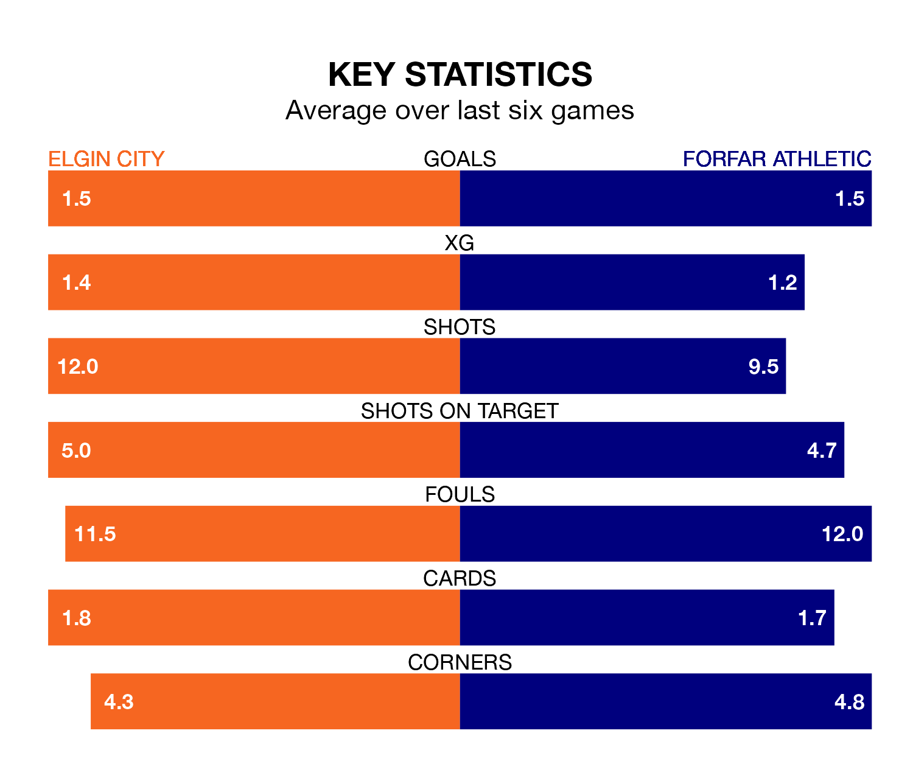

Struggling Elgin City face Forfar Athletic at Borough Briggs on Saturday looking to build on a win in their last league outing.
After securing all three points with a 2-1 victory over Stranraer on March 16, the Black & Whites sit seventh in League Two.
They travel to play a Forfar side sixth in the standings, who were held in their last match, 1-1 against Stenhousemuir.
With Marc McCallum between the sticks, Forfar can rely on one of the league's safest pair of hands. He has kept 10 clean sheets in his 29 appearances this season, and only one other 'keeper – Stenhousemuir's Darren Jamieson – has been able to prevent the opposition scoring on more occasions in League Two.
In Elgin's net, Tom McHale has six clean sheets in 28 games. He has conceded a goal every 63 minutes, 30% more often than the 79 minutes between goals for McCallum.
In the last 10 years, Elgin and Forfar have played each other on 16 occasions. They won four each, and they drew eight times.
On average, the Black & Whites scored 1.0 goal and the Loons 0.9 in those matches.
Their last meeting was on January 13, when Forfar won 2-1 at home.
With 28 goals in 29 games so far this season, City are the league's lowest scorers with 1.0 goals per game. And they are conceding more than average, letting in 47 goals at a rate of 1.6 per game.
Athletic are also below average scorers, with 1.1 goals per game, compared to a league average of 1.3. They have conceded 1.2 goals per game.
The Black & Whites are in reasonable form in League Two, with three wins and two draws from their last six games.
With two wins and four draws over that period, the Loons' form is slightly worse – they have taken 10 points from 18, compared to the home team's 11.
Updated: 10:19 (UTC), 22/03/24